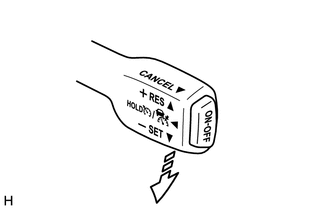
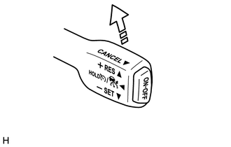
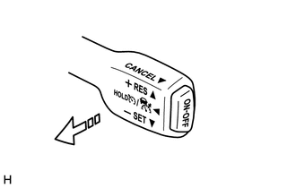

INSPECT SET FUNCTION
Turn the speed limiter system on using the speed limiter switch.
Drive the vehicle at 30 km/h or 20 mph or more.

Press the cruise control main switch to -SET.
Check that the vehicle speed is limited to the set speed.
INSPECT ACCELERATION FUNCTION
Turn the speed limiter system on using the speed limiter switch.
Drive the vehicle at 30 km/h or 20 mph or more.
Press the cruise control main switch to -SET.

Check that the vehicle limit speed increases by an interval of 5 km/h or 5 mph while the cruise control main switch is pressed to +RES, and that the vehicle maintains the newly set speed when the switch is released.
Tap the cruise control main switch to +RES. Check that the vehicle limit speed increases by about 1 km/h or 1 mph each time the switch is tapped (tap-up control).
Tech Tips
The highest possible set speed is approximately 200 km/h or 125 mph.
INSPECT COAST FUNCTION
Turn the speed limiter system on using the speed limiter switch.
Drive the vehicle at 30 km/h or 20 mph or more.
Press the cruise control main switch to -SET.
Check that vehicle limit speed decreases by an interval of 5 km/h or 5 mph while the cruise control main switch is pressed to -SET, and that the vehicle maintains the newly set speed when the switch is released.
Tap the cruise control main switch to -SET. Check that the vehicle limit speed decreases by about 1 km/h or 1 mph each time the switch is tapped (tap-down control).
Tech Tips
The lowest possible set speed is approximately 30 km/h or 20 mph. The speed limiter system cannot be set below the lowest possible set speed.
INSPECT CANCEL FUNCTION
Turn the speed limiter system on using the speed limiter switch.
Drive the vehicle at 30 km/h or 20 mph or more.
Press the cruise control main switch to -SET.
When performing one of the following, check that the speed limiter system control of vehicle speed is canceled.
Pulling the cruise control main switch to CANCEL*1
VSC is turned off.*1
Turning the speed limiter system off using the speed limiter switch*2
Pushing the cruise control main switch on*2
*1: The stored vehicle limit speed in the hybrid vehicle control ECU is maintained
*2: The stored vehicle limit speed in the hybrid vehicle control ECU is not maintained
INSPECT RESUME FUNCTION
Turn the speed limiter system on using the speed limiter switch.
Drive the vehicle at 30 km/h or 20 mph or more.
Press the cruise control main switch to -SET.

Pull the cruise control main switch to CANCEL.
After pressing the cruise control main switch to +RES while driving the vehicle at 30 km/h or 20 mph or more, check that the vehicle limit speed set at the time of cancellation is resumed.
INSPECT OVERRIDE FUNCTION
Turn the speed limiter system on using the speed limiter switch.
Drive the vehicle at 30 km/h or 20 mph or more.
Press the cruise control main switch to -SET.
Fully depress the accelerator pedal and check that the vehicle accelerates beyond the set speed.